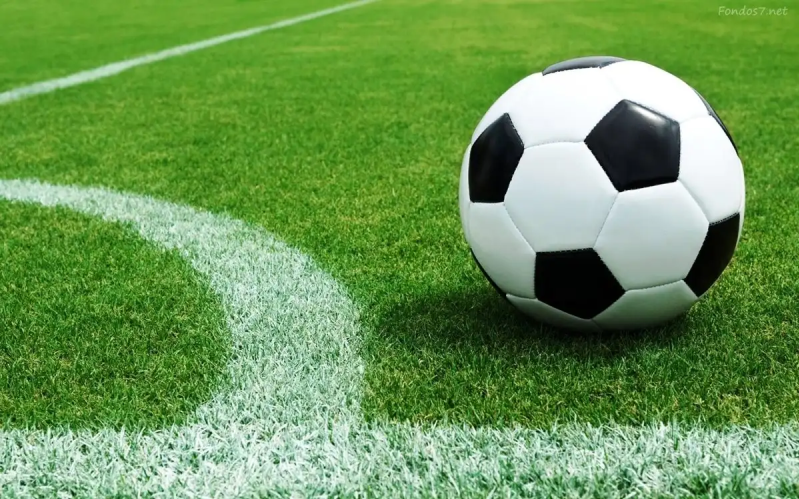

El béisbol es un deporte competitivo de habilidad que se juega con una bola dura y un bate entre dos equipos de nueve jugadores cada uno. Un partido de béisbol se divide en nueve periodos de juego, cada uno de los cuales se llama entrada o inning. El equipo que anote más carreras a lo largo de las nueve entradas gana el partido.

Rugby es el nombre de un deporte que enfrenta a dos equipos formados por quince jugadores cada uno. El objetivo es llevar una pelota (balón) ovalada hasta detrás de la línea que supone el final del campo, o hacer pasar esta pelota entre dos postes y un travesaño que se ubican en la misma línea.